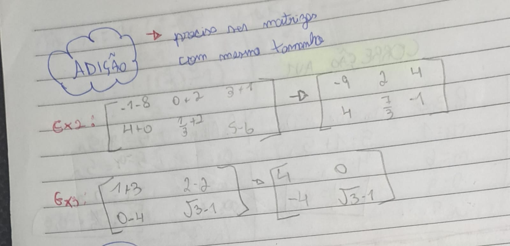
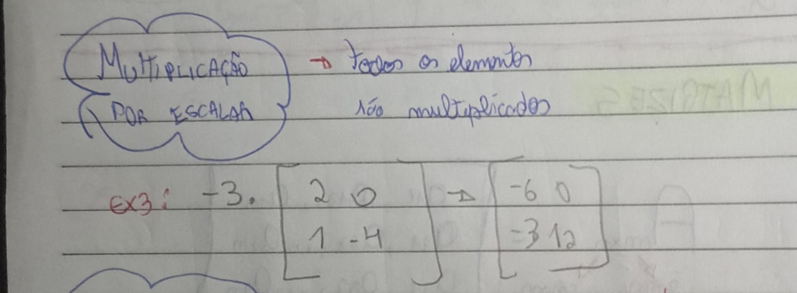

➔A soma de matrizes pode ser considerada uma das operações de matrizes mais simples e fáceis de ser realizada, mas antes de realizarmos a soma, precisamos saber de uma única regra, ambas as matrizes terão que ser do mesmo tamanho, por exemplo: Matriz A e Matriz B terão que ter o mesmo numero de linhas e colunas, ex: 2x3, 3x3, 2x2... Feito isso agora avançamos para a etapa de soma dos elementos da Matriz A e Matriz B, para somar é bem simples, basta somar o 1o Elemento da Matriz A, com o 1o Elemento da Matriz B, ou seja, é basicamento somar os elementos que estão na mesma posição em ambas as tabelas, vamos supor que Matriz A tem a11 = 3, e Matriz B tem a11 = 2, isso irá gerar uma nova matriz com a posição a11 = 5, ( Matriz A, a11 + a11, Matriz B).
| Soma/Adição |
|---|
|  |
➔Ao contrario da soma a subtração consiste em diminuir os elementos das matrizes, seguindo a mesma lógica de que ambas as matrizes necessariamente devem ter o mesmo tamanho de linhas e colunas, por exemplo: Matriz A e Matriz B terão que ter o mesmo numero de linhas e colunas, ex: 2x3, 3x3, 2x2... O próximo passo é a operação onde segue o mesmo caminho que a Adição de matrizes, ao contrario de somar as mesmas posições, agora irá subtrair eles, vamos supor que Matriz A tem a11 = 3, e Matriz B tem a11 = 2, isso irá gerar uma nova matriz com a posição a11 = 1, ( Matriz A, a11 - a11, Matriz B).
➔Agora vamos falar de multiplicação de matrizes, existem diversas formas de realizar a multiplicação de
matrizes. Neste
trabalho coloquei a multiplicação por elementos, que consiste em multiplicar um número fora da matriz, pelos
elementos dentro
dela, por exemplo:
3.[3, 1]
[1, 0]
Isso resultará em uma matriz:
[9, 3]
[3, 0]
Podemos ver que a matriz resultante é o resultado das operações feitas com o numero multiplicador (3),
multiplicando
todos os elementos de cada posição da matriz.
| Multiplicação por elementos |
|---|
|  |